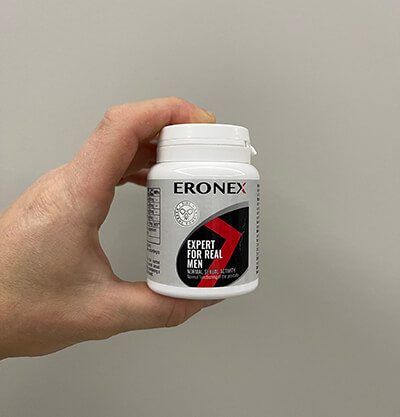
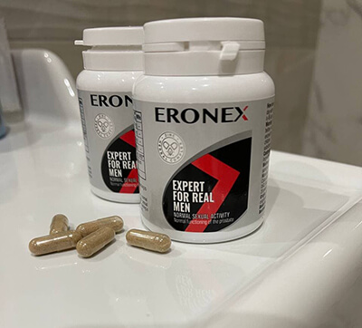
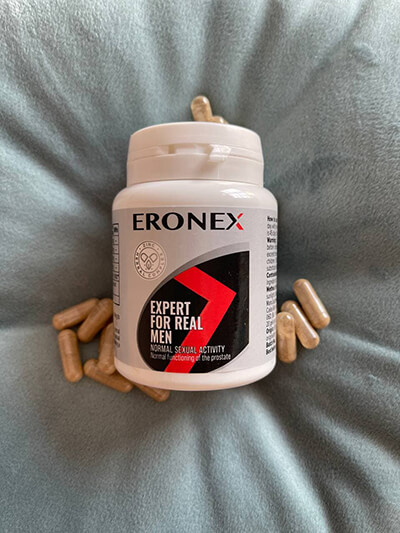
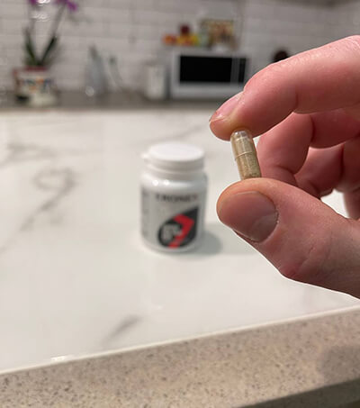

9 din 10 bărbați sunt nemulțumiți de dimensiunea penisului lor și acest lucru este normal. Dar există o modalitate de ao mări fără operații, pompe pneumatice dubioase și injecții de acid hialuronic? S-a dovedit că există mulți bărbați care au reușit să se asigure de eficacitatea lui. După cum înțelegeți, astăzi vom vorbi despre un booster natural de testosteron – un supliment popular de vitamine folosit de actorii filmelor pentru adulți.
La sfârșitul acestui articol, veți afla cum să obțineți produsul cu 50% mai ieftin decât prețurile de vânzare cu amănuntul.
Richard Quinn: "Regizorul a lămurit: fie îmi voi crește penisul într-o săptămână, fie vor găsi un alt actor"

"Credeți-mă, există destui concurenți în lumea mea. Și trebuie să te stărui să rămâi în porno premium. Odată regizorul mi-a spus că pentru următoarea filmare avea nevoie de un actor cu o pulă mare. Da, ar fi posibil să se utilizez pompa pentru a crește, dar ea dă doar un efect temporar. Prin urmare, am apelat la cel mai bun specialist din țară, care mi-a dat sfaturi utile: cu cât nivelul testosteronului este mai înalt, cu atât penisul este mai mare.
Acum gândiți-vă singuri. Organul sexual masculin nu este un mușchi, ci un corp cavernos. Adică, este imposibil să-l antrenezi, ca un biceps în sala de sport. Dimensiunea penisului și funcția sa erectilă depind doar de cantitatea de sânge pe care o poate primi. De aceea, după multe remedii populare, ni se pare că organul sexual a crescut în dimensiune – aceștia sunt inhibitori care îmbunătățesc temporar fluxul sanguin către organele pelvine. Dar, de îndată ce efectul pastilelor se oprește, dimensiunea revine la minimul fiziologic.
În organism există un singur element care poate regla volumul fluxului sanguin către organele genitale - testosteron. Și cu cât este mai mare producția naturală a hormonului masculin, cu atât penisul va fi mai mare. Dar în prezent, știința cunoaște doar două modalități de îmbunătățire a secreției de testosteron: sportul pe termen lung, folosind metoda Kegel sau un curs de suplimente . Pentru mine, alegerea a fost evidentă – când trebuie să obțineți un rezultat într-un timp scurt, trebuie să beți ».
5 întrebări incomode pentru un specialist
Am reușit să luăm un interviu sincer la un specialist bine-cunoscut și să-i punem 5 întrebări incomode. Peter Brahms a răspuns la întrebările pe care erați prea timid să le puneți.
Studio: Cât de mult fiziologic putem mări penisul?
Peter Brahms: În corpul nostru, totul este proporțional. Adică dimensiunea penisului depinde de înălțime, iar dacă penisul este mai mic decât dimensiunea dorită – acesta poate fi întotdeauna mărit cu cel puțin 40%. Pentru unii, 20 de centimetri vor fi limita, pentru alții, 30 nu vor fi suficiente.
Anterior, organul genital a fost mărit doar chirurgical. Dar, după o astfel de operație, penisul poate pur și simplu să nu facă față noii sarcini. Adică dimensiunea va fi mai mare, iar cantitatea de sânge care intră va rămâne aceeași. Deci, dacă alegeți o operație, atunci va trebui să plătiți pentru centimetrii suplimentari cu o erecție mai slabă.
Dar astăzi penisul poate fi mărit prin metode mai ușoare. De exemplu, o persoană poate bea pur și simplu un curs de și să mărească dimensiunea penisului exact cât dorește. Acest supliment este capabil să mărească proporțional secreția de testosteron, libidoul, funcția erectilă și dimensiunea genitală în același timp. Dar, în general, orice om își poate crește în mod natural penisul cu până la 80% – orice altceva poate fi periculos pentru sănătate.
Studio: Cât de repede poate fi crescut organul reproducător?
Peter Brahms: Perioada minimă pentru adaptarea normală a corpului la noile "dimensiuni" este de 3 zile, iar un curs complet durează o săptămână și jumătate. În 10 zile, puteți adăuga câteva centimetri și vă puteți simți minunat.
Există și alte modalități de a crește rapid dimensiunea organului reproducător, dar numai în volum. Acestea includ multe remedii populare, dar această chimie este dăunătoare și chiar periculoasă pentru sănătatea bărbaților.
Studio: Ce recomandați să utilizăm pentru extinderea penisului?
Peter Brahms: Cu siguranță, . Acesta este un supliment util de vitamine cu extracte de fructe de Palmier pitic, urzică, tribulus și Maca peruviană. Adică, un cocktail echilibrat care are capacitatea de a stimulează o creștere naturală, nu artificială a testosteronului. Produsul este, de asemenea, îmbogățit cu Zinc și magnezie, care ajută la îmbunătățirea fluxului sanguin către capul penisului, crescând excitabilitatea.
Este amuzant că inițial acest supliment a fost vândut ca o prevenire a bolilor de prostată și pentru creșterea libidoului, fiind un analog natural al faimoaselor pastile albastre. Dar, după cercetări, a fost descoperit un „efect secundar” - la bărbați, organul sexual a început rapid să crească.
Studio: Dimensiunea medie a penisului este de 13 cm, iar majoritatea bărbaților doresc să aibă 20. îi poate ajuta?
Peter Brahms: Pentru un curs complet, puteți crește penisul cu 2 cm. Dar nu recomand să urmăriți o dimensiune mai mare decât cea originală cu mai mult de 80%. De fapt, mărirea de la 13 la 20 cm se încadrează în norma fiziologică.
Dar dacă aveți nevoie să faceți 30 cm din 13 simultan, atunci acest lucru poate fi realizat în cel puțin două cursuri extinse (3 pachete de - nota editorului). Dar cu o pauză de șase luni.
Studio: La cine ar trebui să mă adresez pentru a-mi crește penisul?
Peter Brahms: Mijloacele moderne de extindere a penisului sunt atât de avansate în dezvoltare încât acum puteți face totul acasă. Și cea mai bună parte este că efectul poate dura literalmente ani de zile, după aceea, este suficient să luați un curs de susținere. Mai ales că puteți comanda online - totul este anonim. Iar cursul optim poate fi calculat independent, folosind un calculator simplu.
Actualizat: calculator pentru calcularea aportului de suplimente
Aflați cât de mult trebuie să luați suplimentul pentru a obține dimensiunea dorită:
În cazul dumneavoastră, rata normală de extindere a penisului este de 2 centimetri în 10 zile. Luați câte 1 capsulă de două ori pe zi (pachetul este conceput pentru 10 zile, cursul poate fi prelungit timp pentru o lună).
De asemenea, puteți participa la tombola cu reduceri, unde puteți obține până la -50% la prima comandă
Introduceți toate valorile în calculator
Cum funcţionează
- acesta este un booster de testosteron activ. Are un efect complex asupra sistemului sexual, deci este recunoscut ca fiind cel mai bun instrument pentru bărbații de orice vârstă. Suplimentul se bazează numai pe ingrediente pe bază de plante, fiecare dintre acestea îmbunătățind eficacitatea reciprocă (efect de sinergie):
- Extract de fructe de Palmier pitic. Ajută la creșterea nivelului de testosteron într-un mod natural, este util pentru sănătatea prostatei.
- Urzică dioică. Un antioxidant natural, ajută la îmbunătățirea circulației sângelui în organele pelvine, mărind dimensiunea penisului atunci când este excitat.
- Tribulus Terrestris. Are capacitatea de a spori libidoul masculin, crescând durata excitației și a actului sexual. Poate normaliza nivelul zahărului din sânge.
- Extract de fructe Maca. Ajută la întărirea dorinței sexuale și la îmbunătățirea calității spermatozoizilor.
- Zinc. O legătură și un element esențial pentru funcționarea normală a sistemului de reproducere.
Extragere de reduceri pentru prima comanda
Până la inclusiv, promoția are loc: extragere de reduceri de până la 50% la prima comandă a produsului *
* Promoția este valabilă numai dacă suplimentul este disponibil în depozitul distribuitorului

Lăsaţi un comentariu
Consumatorul are dreptul sa notifice in scris comerciantului ca renunta la cumparare, fara penalitati si fara invocarea unui motiv, in termen de 10 zile lucratoare de la primirea produsului sau, in cazul prestarilor de servicii, de la incheierea contractului.
*Nu este un medicament.
*Efectele depind de caracteristicile individuale ale organismului.
*Înainte de utilizare, citiți cu atenţie instrucțiunile
Iau câteva săptămâni. Este prea devreme pentru a vorbi despre rezultate, dar am observat că există mai multă energie. Chiar și părul de pe linia părului a început să crească! 
155Încă nu am înțeles unde pot cumpăra aceste capsule pentru puterea masculină?
38Încercați să câștigați o reducere și apoi va apărea un formular de comandă
22Interesant, mulțumesc!
13Am reușit să comand la o reducere! Parcela a sosit ieri, am plătit la primire 
74Deci ăsta e secretul!
3Am crezut că pensia mea a sosit deja și a venit timpul să termin cu sexul, dar nu. După un curs de aceste capsule, sănătatea masculină mi-a revenit 
17Mi-e teamă să îmbătrânesc... o voi comanda, poate, pentru prevenire.
3Fac sport de o lună acum, încerc să mănânc în mod corespunzător și să iau deci soția mea nu se poate sătura de mine. Totul este bine în pat, dorm mai bine și sunt mai puțin nervos
29De asemenea, am primit un pachet cu capsule. La prima vedere, acestea sunt de dimensiuni medii, deci nu ar trebui să existe dificultăți de le bea. 
25Am făcut injecții pentru a crește testosteronul. Acum am probleme cu inima…
14Nu am crezut prea mult în efectul , și în zadar! Am început să mă simt din nou ca un bărbat, m-am întinerit parcă, chiar și în exterior
23